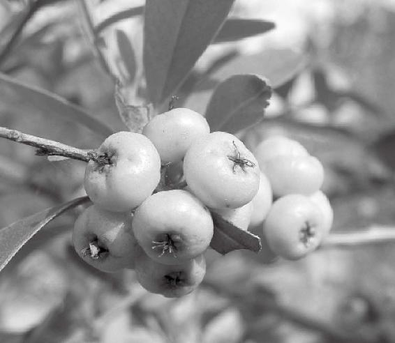
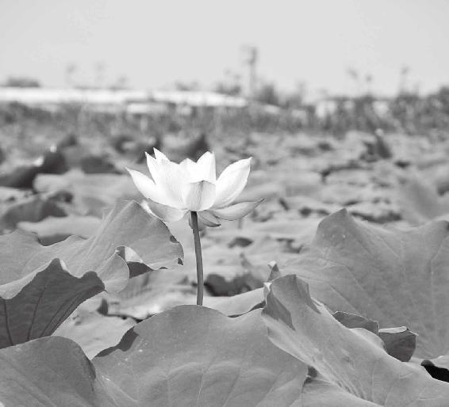

第十一章：人的肾是与北方、黑色和谐共振的
北方、黑色正好对应沉静、内敛，含而不露的肾
人的两阴是与肾相通的
肾系统的精华藏在肾臟，发病多在身体小块肌肉的接缝处
咸味能润肾
肾是属水的
补脑髓最好的肉是猪肉
豆能够补肾、固肾
水星的变化会影响到人的肾功能
骨头的病都要从肾上去调治
多听la音，多用“六”和“一”的数字对肾水不足的人好
调治肾病用腐药
经文：
北方黑色，入通于肾，开窍于二阴，藏精于肾。故病在谿（xi）。其味咸，其类水。其畜彘（zhi）。其榖豆。其应四时，上为辰星。是以知病之在骨也。其音羽。其数六。其臭腐。
1.“北方黑色，入通于肾”
北方、黑色正好对应沉静、内敛，含而不露的肾
梁冬：“北方黑色，入通于肾”什么意思？
徐文兵：“北方”就是我们北半球的北方。
梁冬：那南半球的北方又是怎么处理呢？
徐文兵：如果你到南半球，到澳大利亚、南非以后，五行正好是相反的，越往北越热，越往南极越冷。
我们中国处在北半球，以黄河、长江为界，越往北走越冷、越寒。
黑色还有好多其他的名字——“皂”，穿青挂皂；“玄”，玄铁，就是说，黑到了极致，黑到了极处；“乌”，乌云蔽日。这些都是黑色，正好对应了北方的方位，对应了我们五臟中沉静的、内敛的，含而不露的臟——肾。
黑色，正好对应了北方的方位，对应了我们五臟中沉静的、内敛的，含而不露的臟——肾。
前面我们说到肺，中医用很多入肺经的药都是白色的。比如山药，又叫“薯蕷”，它可以补肺气。
现在很多人都知道喝山药薏米粥。其实，那个粥最好在立秋，气候干燥以后补肺的时候喝。我们经常吃的梨，北京有著名的京白梨，甜甜的、酸酸的，能够补肺。还有我们经常用的贝母，它是古代调治肺里面有空洞、有破损的最好的药。调治肺部虚损也可以用贝母。贝母有两种，一种是川贝，个头比较小，价钱比较贵；还有一种叫浙贝，浙江出产的贝母，又叫大贝母，或者叫象贝，也是白色的。
最厉害的一味补肺药，叫白芨。糊窗纸来不及打浆糊的话，就到中药店抓白芨，然后碾成末儿，拿开水一浇，就是一盆稠稠的浆糊。它补肺的效果特别好。还有一味中药，叫“续断”。
梁冬：续断有什么用呢？
徐文兵：腿骨折了、断了，加这味药，叫续断。
梁冬：前面讲到白色“入通于肺”，黑色肯定就“入通于肾”了？
徐文兵：你会观察到一些颜色偏黑的，或者看起来乌黑锃亮的那种东西，都会跟肾有一种共振的频率。比如，何首乌、黑木耳、黑豆和黑芝麻。
你会观察到一些颜色偏黑的，或者看起来乌黑锃亮的那种东西，都会跟肾有一种共振的频率。比如，何首乌、黑木耳、黑豆和黑芝麻。
还有最黑的一味入肾的药叫地黄。它出产的时候是黄色的，但是经过炮制以后变成黑色了，叫熟地，也叫地髓。
梁冬：就是传说中的“六味地黄丸”。
2.“开窍于二阴”
人的两阴是与肾相通的
梁冬： “北方黑色，入通于肾，开窍于二阴”。这有什么说法吗？
徐文兵：人一共有九窍，头颅上边有七个窟窿眼儿。我们说，这人七窍流血，是能看得见的。但人还有两窍，中医含蓄的说法叫前后二阴，因为它藏在阴部，比较隐、比较藏，不露在外面。但两个窍是控制大小便的，主管它们的臟腑叫肾，因为“肾主封藏”。人到快死了，大小便就会失禁。
梁冬：有些时候，我跟人谈事儿，有些人一会儿起来上回厕所，一会儿又去上厕所。一看，这哥们儿应该吃点黑木耳，马上点两个黑木耳吃，以示赞助。
徐文兵：什么叫“看人下菜”？高手给人点菜，都是看今儿什么季节，我们在哪儿，你什么体质，别上来就点“你这儿什么菜最贵，来一盘”，穷得只剩下钱了！
什么叫“看人下菜”？高手给人点菜，都是看今儿什么季节，我们在哪儿，你什么体质，别上来就点“你这儿什么菜最贵，来一盘”，穷得只剩下钱了！
梁冬：什么叫“开窍于二阴”？
徐文兵：“臟”是藏在里面，含而不露的。但是它有一个Window，向外开放，你可以通过窥视这个Window或者检查这个窗户，来了解它内在的变化。
中医反对把人开膛破肚打开看，为什么呢？第一，“身体发肤，受之父母”，不要毁伤。第二，你打开看又怎么样？你看到的永远是那个“像”，至于谁让它长的肿瘤？谁给它提供的能量？谁给它提供这种支持？背后那种无形的东西，你看得见吗？与其那样，还不如不打开。但是通过一些窍道，你可以窥见，“窥一斑而见全豹”。
窥一斑而见全豹。
也就是说，当人的大小便出现问题的时候，你除了要考虑跟它紧密相联的膀胱、直肠，或者是大肠以外，还要想到总负责的肾。所以，很多人在漏，什么叫漏？不停地撒尿，或者不停地拉肚子。这种漏，就不是大肠的问题了，你跟大肠较劲，也解决不了它根本的问题。
当人的大小便出现问题的时候，你除了要考虑跟它紧密相联的膀胱、直肠，或者是大肠以外，还要想到总负责的肾。
3.“藏精于肾。故病在谿”
肾系统的精华藏在肾臟，发病多在身体小块肌肉的接缝处
梁冬：“藏精于肾，故病在谿（xi）”。
徐文兵：肾臟出现问题以后，它会表现在一些对应的穴位上，而这些穴位处于小块肌肉的接缝处。《黄帝内经》中有一句话，叫“肉之大会名曰谷”，这一般都是对应脾胃的穴位，就是大块肌肉的接缝儿。
肾臟出现问题以后，它会表现在一些对应的穴位上，而这些穴位处于小块肌肉的接缝处。
我们上次说，看一个人肌肉有没有萎缩，脾胃有没有毛病，就把大拇指、食指一夹，合谷穴这儿就会拱起一块肉，叫“肉之大会名曰谷”。
什么是“肉之小会名曰谿”，“谿”的简体版是三点水，一个姓奚的“奚”。人体上面最著名的一个“谿”叫“太谿”，它在脚踝，脚的内踝高点与跟腱的中间那个位置。穴叫太谿。太谿那儿没肉，它是跟腱，筋膜。你要在太谿扎根针，穿过去，对面就是昆仑。
我们经常说，把一个人的武功废了，怎么废呀？就把他那个脚筋挑了。把那儿一挑，这个力就发不出来了，这个力就断了。“力由足起,气由脊发”，这个力就断了。没有力，哪有气？刘翔跑步拉伤的就是这个地方。“谿”——肌腱、筋膜，还有它那个小的肌腱、筋膜的接缝处，它那儿肉不多，但是受劲、受力比较大。
还有一个“谿”，叫“后谿”。后谿是小肠经的第三个穴。它在我们的小拇指前面，就是掌指关节的前面；离指尖很近的那个穴，是小肠经的第二个穴，叫“前谷”，它的后面，叫“后谿”。后谿属于小肠经的穴，但是它通督脉。所以，很多人有颈肩问题要在小肠经上找，因为小肠经过肩胛骨，过脖子。还有，腰背的问题要在督脉上找，因为督脉整个贯穿人的正中间。
很多人有颈肩问题要在小肠经上找，因为小肠经过肩胛骨，过脖子。还有，腰背的问题要在督脉上找，因为督脉整个贯穿人的正中间。后谿是通督脉的，所以这个穴一扎，能够解决很多腰背疼的问题。
后谿是通督脉的，所以这个穴一扎，能够解决很多腰背疼的问题。因为腰背疼表现在很多叫“谿”的接缝处。
所以，检查肾有没有问题，第一件事，就是按太谿。看太谿和昆仑，一捏，薄如蝉翼——您老人家虚得快崩溃了！
梁冬：一个朋友告诉我，他观察一个女孩子，好不好看、优不优雅，主要看小腿下面跟脚跟关节那一块。有些女孩子很宽，就不优雅，有的女孩子很窄，就显得优雅。其实那块儿很窄是肾虚的表现，是吧？
徐文兵：消耗过度，要么就是先天不足。你说的也有道理，因为在消耗中才磨练出那种优雅。要娶媳妇的话，还得娶一个厚一点儿的。
梁冬： “故病在谿”，“谿”指四肢上肘、腋、膝、胯处的大关节，对吗？
徐文兵：《黄帝内经》这本书就跟《红楼梦》一样，一本书养了几千几万人——都在那儿说《红楼梦》，挤兑《红楼梦》，我也是其中一家。众说纷纭，莫衷一是。可以根据你的理解去选一个你认为是对的。
梁冬：读书就应该如此，否则，多无趣啊！
4.“其味咸”
咸味能润肾
梁冬：“其味咸”,怎么看这个“咸”？
徐文兵：咸能润肾。学《黄帝内经》，你把里面所有味道与五臟的对应归结起来，就会发现其中有很多比较乱、而且互相矛盾的地方。有的说这个入心，有的说那个入肾。后来，我们又学了一个传承叫《汤液经法》，是厨子伊尹写的。有的网友给我留言，你管人叫“厨子”是不是有点不尊重？我说，这叫“仁者见仁，智者见智”。我本身不当大夫，就想当个厨子。厨“子（zi）”的发音与孔“子（zi）”、孟“子（zi）”类似，我将来想做个厨子（zi）。我想成为的人，你说我不尊重吗？
伊尹对味道的把握比较好。任何一个臟，一般都有两三个味道对它起作用，绝对不是一对一的。酸可以入肝，酸还入肺——望梅还能止渴嘛！
“咸”能润肾。肾如果封藏太过，就会产生结石，肾里边产生肿瘤或者是癌症的时候，就好像要推动一块粘连在一个地方的大石头，你加点咸，就能推动它，就像加了润滑油一样。苦味药能坚肾，能把肾固住。也就是说，如果得了肾结石，或者肾生了肿瘤，你就要少吃苦，多吃点咸的药，润一下。《黄帝内经》有一句话，叫“肾苦燥,急食咸以润之”。
如果得了肾结石，或者肾生了肿瘤，你就要少吃苦，多吃点咸的药，润一下。
梁冬：如果这样的话，把黑小豆拿盐水泡过吃，会不会很补肾呢？
徐文兵：你说得太对了！古代人吃黑小豆这些豆类的，都得加点盐。最典型的叫“豆豉”。豆豉就是黑的，味道是咸的。有道菜叫“豆豉鲮鱼油麦菜”，古人早就发现，老吃豆子会吃出肾闭藏太过。怎么办？反佐一下，加点咸。
有道菜叫“豆豉鲮鱼油麦菜”，古人早就发现，老吃豆子会吃出肾闭藏太过。怎么办？反佐一下，加点咸。

万物调和，方能达到好的效果。
5.“其类水”
肾是属水的
梁冬：“其类水”，怎么解读肾和水之间的这种关系？
徐文兵：肝，“其类草木”；心，“其类火”；脾，“其类土”；肺，“其类金”；肾，“其类水”。当然，这个“水”不是地上的水。“黄河之水天上来”——肾的水是从“天上”降下来的。所以，有个地方叫“天水”——“天一生水，地六成之”，说的就是这儿。
为什么“水”对应黑呢？地球上有生命，就是因为“地气蒸腾为云，天气下降为雨”。一番云雨过后，才孕育出生命。
地球上有生命，就是因为“地气蒸腾为云，天气下降为雨”。一番云雨过后，才孕育出生命。
梁冬：人间也是如此嘛。
徐文兵：下雨的时候云是黑色的乌云——黑云压城城欲摧。乌云下的水是诞生生命的水。大海里的水是咸的，你在那儿游，能把你渴死。但是，这时候天降大雨，赶紧舀一瓢，一喝，就是淡水。
“元”“首”两字有什么区别
我们身体里边最高处是头颅，头颅又叫首级、元首。人们经常说“国家元首”，我说，“是国家元，还是国家首？” “元”和“首”有什么区别？我们用数字来表述一下。
“首”应该用“一”，排行榜位居首位； “元”是零、玄，是看不见的。 “首”是你的头，又叫脑袋——装脑的一个袋子，只不过它硬了点儿； “元”就是你的脑髓。
梁冬：“无极生太极”嘛！
徐文兵：我们的水在哪儿？举个例子，塔楼里面有个水箱，水箱在楼层最高处。“水箱”就相当于我们的脑袋。脑袋里面装的全是脑髓，脑髓就是我们的“天水”，它慢慢沿着脊髓往下渗，然后再渗到我们的四肢、骨骼，变成骨髓，这就是我们的“水”，本元的水。
梁冬：那这里能装新东西吗？
徐文兵：女性在28岁之前，是递增：不断地补益精髓，吃五谷，化成精髓，渗到骨空里面；28岁以后，还在补充，但是用得多，补得少。男性的分界点是32岁。你之前在补，慢慢就在漏、最后全漏干。漏干后大脑萎缩、脊髓空洞，就是“水”干了。这个水，可不是说你拿一瓢冷水，或者喝一杯冰红茶就能补上去的。那么，你想补益脑髓，吃什么最好呢？《黄帝内经》接着就说了……
女性在28岁之前，是递增：不断地补益精髓，吃五谷，化成精髓，渗到骨空里面。28岁以后，还在补充，但是用得多，补得少。
6.“其畜彘”
补脑髓最好的肉是猪肉
梁冬：“其畜彘”是什么意思呢？
徐文兵：彘就是猪肉。
梁冬：猪肉是补脑髓的吧？
徐文兵：没错，关于猪肉有个特别著名的故事。毛主席写东西太多，很操心，劳神太厉害，需要补补脑子，这时他会马上叫厨师做一碗“红烧肉”——“毛氏红烧肉”。毛主席是伟人，大哲学家。他为什么那么倡导中医？因为中医药是伟大的宝库，应该加以发掘、提高。毛主席举手一挥，“西学中”，让一帮西医来学中医。
梁冬：现在都是“中”学“西”了。
徐文兵：现在都不是学习，而是叛习，全叛变了。毛主席的有些想法与《黄帝内经》的思想很相似。他的保健医生写过一本书，描述了给他看病的过程。保健医发现毛主席牙龈感染了，白细胞有点高，然后，就给他用抗菌素，建议他要漱口、刷牙。毛主席就来了一句：“老虎从不刷牙，为什么它的牙不会掉？”
大自然天造地化，给人和动物都设计好了一套系统，我们叫“自愈”——自我修复、自我康复这套系统，本身就有，只不过我们人为地把它搞得退化了。
梁冬：这个问题问得太好了，答案是什么呢？
徐文兵：大自然天造地化，给人和动物都设计好了一套系统，我们叫“自愈”——自我修复、自我康复这套系统，本身就有，只不过我们人为地把它搞得退化了。退化以后，你不去想办法修复本身就有的系统，却急于借助外力。
古代都是用盐水漱口，古代还有竹盐，竹子是苦的，盐水是咸的，正好是一个搭配。
古代都是用盐水漱口，古代还有竹盐，竹子是苦的，盐水是咸的，正好是一个搭配。
漱口远比刷牙效果要好。刷牙和剔牙有什么缺点呢？有人特狠，把自己的牙能刷出沟槽来。还有人剔牙，把牙缝剔得特别宽。现在人用牙线，这是在一条错误道路和错误方向上做了一点对的事儿。
毛主席说老虎不刷牙，其实老虎的唾液腐蚀性特别强。我们吃个馒头，能吃出甜味，充其量就是把植物蛋白给化了一下。老虎的唾液很厉害，能够把吃进去的生肉消化掉。它的自洁系统没有得到异化，还保存了一种天真。
另外，毛主席支持中医还有一个很大的原因。就是毛主席在延安的时候，住的窑洞有点潮，再加上他常年征战，关节就有点风湿。延安当地有个著名人物叫李鼎铭先生，是一位特别好的中医，他给毛主席做针灸、开中药，调治以后，毛主席的风湿关节炎完全好了。所以，毛主席对中医有特别好的印象，要大力发展中医。最著名的典故就是毛主席说，“脑子累了，吃碗红烧肉”。他能感觉到，吃完这个猪肉以后，对肾精的补益效果非常好。
古代对猪有几种叫法：一个叫“彘”。 这个比较有名，就是在“鸿门宴”上，项羽招待刘邦、张良，范增屡屡举起自己的那个玉玦，示意项羽把刘邦宰了。项羽没宰刘邦有一个原因，就是后来樊哙进来了，当时，樊哙的表现特威猛。项羽赐给他一块生猪肉——彘肩（翻译成现代话叫猪肘子）。樊哙接过来以后，就放在自己的盾牌上，“咔、咔、咔”一切，生吃。项羽本身是一个武夫，是个莽汉。“同气相求”，他就欣赏这种生猛的人，所以樊哙的表现——生吃猪肉，多多少少削弱了项羽杀刘邦的心。
猪还有一种称谓叫“豚”。豚和猪有什么区别呢？唐宋的时候，家养的猪叫“豚”，野猪叫“猪”。野猪的肉味特别香，特别冲。家猪的肉就比较柴。
阳气不足的男子吃猪脑容易阳痿
梁冬：猪肉怎样做最好吃？
徐文兵：这要根据人的体质来看。猪本身是水性，肉很嫩。在大部分的肉类中，比如，羊肉、鸡肉、牛肉、驴肉、马肉里面，猪肉最嫩。为什么说猪肉“水性杨花”呢？，因为它百搭——跟所有的菜都能配。
自个儿没个性，嫁给谁就是谁的老婆，这是一种非常好的品格。 “水利万物而不争”，不显摆自己。不像羊肉，一炒盘羊肉，膻味马上就出来了；切盘牛肉，马上卡牙缝，纤维的粗糙劲儿就出来了。猪肉是最随和的。
什么叫随和？逆来顺受，它跟所有的菜都能配上。四川人把猪肉做到极致——川菜把猪肉做绝了。
要想发挥猪肉滋阴的效果，可以炖。如果说，你想中和一下它的阴性、寒性，不想自己吃得跟猪一样胖，那就烧，或者是在里面多加点佐料。能提高猪肉鲜味的最好的佐料是八角茴香，也叫大料。大料是提升猪肉鲜美味道最好的佐料，能反佐猪肉的寒性。但是，如果炖羊肉的时候放大料，那就是巨蠢。你如果放大料进去，羊肉的鲜味就没了。想衬托羊肉的鲜美香味，一个是放葱，另一个是放姜，再一个就是放小茴香、放孜然。
要想发挥猪肉滋阴的效果，可以炖。如果说，你想中和一下它的阴性、寒性，不想自己吃得跟猪一样胖，那就烧，或者是在里面多加点佐料。
梁冬：好吃的羊肉是拿清水煮的。
徐文兵：清水煮也行，加点盐就可以了。猪肉里边最寒的部位是猪脑子，天水。猪脑子凉到什么程度？它能把阳气不足的男人弄成阳痿。
猪肉里边最寒的部位是猪脑子，天水。猪脑子凉到什么程度？它能把阳气不足的男人弄成阳痿。
梁冬：我以前高考的时候，隔壁的阿姨说，你要补补脑油，她便拿猪脑和鱼脑炖起来给我吃。
徐文兵：你那会儿多大？
梁冬：十八九岁。
徐文兵： “相貌堂堂真男子，未亲女色少年郎”，那会儿阳气足，能把它化掉补你的脑子。如果人到中年了，还出去吃火锅，然后涮几片猪脑子，回去以后就起不来了。但相反来讲，如果碰到一个阴虚火旺的人——阴液极端不足的人，整天手心、脚心烧，然后心烦，盗汗，容易“哄”一下子就热起来，然后无故发脾气——更年期。这种人就需要滋阴。
中医里边有个方子叫“大补阴煎”。大补阴煎里面有知母、黄柏，这副中药里边，主药是猪脊髓——猪腔骨里边的脊髓，功效仅次于猪脑子。所以，一般用草木的药滋阴没有效果的时候，就用这个。
吃排骨前掂量一下自己的阳气
徐文兵：有人爱吃腔骨，有人爱吃排骨。吃排骨的人要掂量一下自己的阳气。
梁冬：排骨是很寒的，对不对？
徐文兵：排骨比起腔骨来，不寒，因为它里面没有脊髓。腔骨是猪的脊椎骨，是带脊髓的。羊蝎子的脊髓比猪的腔骨要好一点，它是热的。而且，羊本身就是热的。
梁冬：前些年，北京特别流行吃羊蝎子。
徐文兵：羊蝎子特别热。我们再说猪肉，吃猪肉有讲究。比如有的人爱吃猪头肉。吃猪头肉有个讲究：第一是要加蒜泥，或者加大瓣蒜；第二，吃猪头肉的时候，一定要喝“二锅头”。
梁冬：猪头肉到底是指哪一块肉呢？
徐文兵：古代祭祀要用“三牲”：牛头、猪头、羊头。这是最高级别的祭祀。祭祀完神，神一看，你们的诚意到了，心领了。然后，人们把猪头、羊头、牛头拿回去，就可以吃了。吃猪头肉的习俗是从这儿来的——把祭祀品放冷了剔下肉来做成凉菜，下酒非常好。
吃猪头肉一定要下酒。如果你喝着凉啤酒，还吃猪头肉，那就叫作“病”——有的人在做事儿，有的人在做人，有的人在作病。
吃猪头肉一定要下酒。如果你喝着凉啤酒，还吃猪头肉，那就叫作“病”——有的人在做事儿，有的人在做人，有的人在作病。
“祭孔”的礼仪虽说比不上祭天那么隆重，但是也得用猪头。有的时候会用点腊肉。祭孔不用豆腐，因为豆腐是淮南王刘安发明的，是道家传承。道家历来看不起儒家，认为这帮人玩形式主义，玩虚的，违背自然。所以，祭孔都不用豆腐，但一定要用猪肉。祭完孔子以后，“分而食之”。所以儒生们又被称为“吃冷猪肉的”。或者人们挤兑那些假模假式的“腐儒”时，就叫他们为“吃冷猪肉的”。
《老残游记》里边有很多情节，都是对这些人的讥讽和挖苦。我们在临床上看到很多人得了阴寒内盛疾病，这些人居住在内陆，很少有机会接触海鲜，所以，他们的疾病一般都是吃猪肉不当造成的。
梁冬：吃猪头肉，是整个猪头上各个部分的肉吧？
徐文兵：猪耳朵是剔下来以后压制成的，猪皮很有胶性和粘性。所以，猪耳朵叫“千层脆”。通常，我们把一层一层的猪耳朵压实了，一切，里面有脆骨，外面有皮、有胶，很好吃。
我毕业后留在东直门医院，东直门医院往北就是簋街。因为食堂饭不好吃，我和同事就跑到簋街上吃饭。那里的猪耳朵是我吃过的最香的。
猪皮冻最能养人的皮和肤
徐文兵：滋阴效果最好的药就是猪皮冻。拿猪皮做成的皮冻叫肉皮冻。现在的人们觉得它就是一般的菜。其实，猪皮冻最能养人的皮和肤。
滋阴效果最好的药就是猪皮冻。现在的人们觉得它就是一般的菜。其实，猪皮冻最能养人的皮和肤。
有时候你想不到的东西，都是好东西。
7.“其榖豆”
豆能够补肾、固肾
梁冬： “其榖豆”是什么意思呢？
徐文兵： 先复习一下五谷。肝对应的是麦子，“其榖麦”；心，“其榖黍”；脾，“其谷稷”，社稷的“稷”；肺，“其榖稻”；肾，“其榖豆”。豆的形状就像人的肾。
补充一点，还有一个特别好的滋补肾的菜叫炒腰花。我们一到饭店马上点一个“火爆腰花”。为什么叫火爆一下？油温比较高，另外，腰子比较脆，你切好以后，基本上爆一下就行了，但是必须要爆。另外，一定要把腰子收拾干净。因为腰子是个泌尿器官，它把血液里边的尿液通过肾盂过滤出来。所以，如果不把里边那个白色的筋—老百姓管那个筋叫“臊筋”，就是把有尿臊味的白筋儿—切干净，腰子就会有一股尿臊味。话又说回来了，你就是切得再干净，它还是会稍微有一点味的，所以，做火爆腰花必须用大量的香菜与之相和。
我见过一种最蠢的做腰花儿的方法，就是做凉菜。做凉菜，不火爆，然后加点其他的调料，而且那个腰子也没收拾好。吃完几口以后，我的胃就受不了，只得冲到洗手间全部吐掉。这就叫胡闹！古代人做菜，宫爆鸡丁、鱼香肉丝，有几百年的传承。意思是说，古人试过很多遍了，这么搭配是最好的。
古代人做菜，宫爆鸡丁、鱼香肉丝，有几百年的传承。意思是说，古人试过很多遍了，这么搭配是最好的。
梁冬：“其榖豆”，豆豉鲮鱼炒腰花，这味菜就很猛了！
徐文兵：这就叫“同”了，不叫“和”。豆子的形状，本身就像腰子，就是我们说的“取类比象”。另外，豆子在五谷里面的蛋白质含量是最高的。如果你能把豆子里面的蛋白质转化成你身体的精，然后再储存起来，这个利用价值是最高的。但是问题在哪儿呢？蛋白质含量越高，越不容易消，也不容易化。
如果你能把豆子里面的蛋白质转化成你身体的精，然后再储存起来，这个利用价值是最高的
多吃米糊糊可以防癌
徐文兵：最容易被我们消化利用的，是跟脾胃匹配的小米。很多人大病一场，脾胃刚恢复，这个时候熬米粥，把熬粥时最上面那层米精、米糊糊喝下去，身体就会越喝越壮。
最容易被我们消化利用的，是跟脾胃匹配的小米。
我的一个病人得了胃癌。他是一个大公司的老总，做完手术后，给他送礼的人很多，全送好吃的。我去看他的时候，因为我们私交不错，我就说：“山西广灵的小米最有名。他们给您送那么多海参、燕窝、海马……虽然海马能壮阳，但您别碰，只要是动物的蛋白您都别碰，要熬小米粥喝。您别怕浪费，把小米粥熬得稠稠的，将上面的米精盛出来喝。”
一个人官儿做大了、位置坐高了，他出点什么问题，帮他出主意的人会很多——这个说东、那个说西。好在这人听我的话，他就喝小米粥，最后养过来了。现在胃癌术后两年了，活得都挺好。每次见面，他就跟我说：“徐大夫，得谢谢你这小米，我什么都没吃，就是喝这个小米粥，养过来了。”
后来，我专门派人到山西搞了一点农家拿石碾子磨的小米，送给了他。我对他说：“你要是吃这个小米，再带点儿糠，那就更好了。”
肿瘤是你的身体长出的另一个“精”
徐文兵：古代称食道癌为“噎膈”，就是噎东西咽不下去，或者是“膈拒”，就是吃进去“呱”又给顶出来了。
中医调治食道癌，有个著名的方子叫“启膈散”，就是开启膈。这是清朝著名医家程国彭研究出来的。他写了本著名的书叫《医学心悟》，这本书是我妈妈当年跟她的师父（大同的一位名医叫马衡枢）学医时的课本。
“启膈散”调治早期胃癌或者早期食道癌，用的全是养阴、化瘀血的药，其中专门加了一味药就是麦糠。
人吃五谷之精，本来是补你的精，如果它没走到正地儿上，就会另起炉灶长出个“精”——肿瘤来。然后，这个“精”又长出个“神”——跟你的“神”不一样——开始无限扩张。所以，你想把这个多余的“精”干掉，可以多吃点糠。
人吃五谷之精，本来是补你的精，如果它没走到正地儿上，就会另起炉灶长出个“精”——肿瘤来。
上世纪六七十年代的农村粮食不够吃，很多人的主食都是“熬点儿小米粥放点儿糠”，其实，这是在防癌呢！
梁冬：中医里面，没有那么多吓人的病名。比如， “噎膈”用现代医学的称呼就是食道癌，那就吓人了。所以，我觉得西医给疾病起了那么多吓人的名字，纯粹是一种自我保护。目的是告诉你这东西不可以治，所以你也没有办法去指责他。
徐文兵： “你得了该死的病，不是我没能力救活你。”
梁冬：得宽容处且宽容，得善良处且善良。
腐竹是豆子里的精华
徐文兵：豆能够补肾、固肾（或者叫益肾）。但是豆子有个最大的问题——不好被消化。我们炒一盘黄豆，一嚼，嘎嘣嘎嘣；蚕豆又叫铁蚕豆，很硬，不好嚼。还有“豌豆”，关汉卿自比——“响当当、硬梆梆，蒸不熟、锤不烂的一颗铜豌豆”。可见，这豆子结实、硬，不好消。
梁冬：吃豆子要放屁是这个原因吗？
徐文兵：放屁是不好化的原因。不好消就是说，你得牙口好，得用肾的延展——牙去咬碎补肾的豆子。这是你利用它的前提。古代中国人除了四大发明以外，还有一项最伟大的发明就是豆腐。豆腐是道家或者叫中医对中华民族的最大贡献，它很好地解决了豆子不好被人消和化的问题。所以，做豆腐又叫磨豆腐，什么叫磨？
豆腐是道家或者叫中医对中华民族的最大贡献，它很好地解决了豆子不好被人消和化的问题。
梁冬：就把它磨碎！
徐文兵：磨豆腐的过程是消的过程。常言道：“一物降一物，卤水点豆腐”。先把豆子磨成液体，叫悬浊液，因为豆子的蛋白不溶于水，煮开了、煮熟了，就是豆浆。熬成豆浆后，再用卤水把豆浆点了，豆浆便会凝结，变成豆腐。
现在的人们流行使用豆浆机，早上打一碗豆浆喝。其实，喝豆浆并不好消化，这和“吃完豆子会放屁”的道理相同。有的人放不出屁，就会肚子胀，胀得鼓鼓的。吃豆子的问题就是胀气、不化，然后放出恶臭的屁。为什么叫“恶臭的屁”？蛋白最基本的分子是氮，就是氨基酸的成分。氨基酸如果没有很好地转化、分解，就会散发出特别臭的味道。这叫“不好化”。
做豆腐怎么能够把氨基酸化了？就是用卤水点。卤水性特别热，甚至是毒。《白毛女》中杨白劳自杀，喝的就是卤水，它能让人的蛋白质凝固。
我们熬豆浆的过程中，豆浆上面会浮出一层油皮，拿根黍秸秆或者筷子，把油皮往起一挑，然后挂起来，就像一张纸一样。
梁冬：那是豆皮吗？
徐文兵：对，豆皮就是腐竹。
梁冬：那个东西好吗？
徐文兵：腐竹是豆子里面最精华的东西。就好像熬小米时，上面浮出一层米精一样，那是它最容易被人消化的东西。所以豆皮，或者叫腐竹是豆子里面相对容易被人们利用的。剩下的部分就是被卤水点好的豆腐，将其压成型，再去做成菜，也很容易被人消化、吸收、利用。
是什么体质，就选择什么样五谷去吃
徐文兵：中国人在肉食性蛋白严重不足的情况下，能保持民族的延续，保持自身大脑的发育，靠的就是豆腐！如果没有豆腐，你可以想象，就好像闹饥荒的时候没饭吃，那哥们儿来一句“何不食肉糜啊”？吃什么肉，哪有肉？没有肉的情况下，我们怎么保持我们的精和神？所以，豆腐对我们的贡献太大了。但现在存在的问题是什么？很多人拿石膏点豆腐。而学过中医的人会知道，白虎汤里面用石膏，是清热的。
中国人在肉食性的蛋白严重不足的情况下，能保持民族的延续，保持自身大脑的发育，靠的是豆腐。
梁冬：以前点豆腐不是用石膏吗？
徐文兵：当然不是，是用卤水点。
梁冬：卤水是什么东西呀？
徐文兵：盐卤。四川自贡出的井盐，就是把氯化钠等杂质过滤出来，剩下那些含其他矿物质的东西——氯化镁、矾、碱什么的，过滤出来的水，就是卤水，含有其他那种矿物质，是一种热性的、特别毒的东西，它能让人的蛋白质凝固。以前是用盐卤点豆腐，现在都改成用石膏点了。
梁冬：这有什么不好呢？
徐文兵：用石膏点豆腐，可谓“寒上加寒”。所以，现在的豆腐也不好消化了。还有一种办法就是用酸汤激豆腐。用酸的东西有一种收敛凝滞的作用，可以把豆腐悬浮在水里面的蛋白凝聚起来。酸汤也不是热的，偏寒。所以，我们现在吃的豆腐都偏寒，所以，你要吃这种豆腐，我建议红烧、锅蹋，或者做麻婆豆腐。
我小时候在农村——山西阳高，人家都用大锅煮豆浆、挑油皮、出豆腐、压豆腐，最后，锅底下有一层锅巴似的东西，当地人叫锅碗儿，铲起来吃特别好吃。那会儿的豆腐，拿到家里就可以浇点麻油、辣椒油，放点盐、葱花一拌，味道很香。或者是小葱拌豆腐——一清二白。
梁冬：传说中的豆腐脑，是那个东西吗？
徐文兵：这不是豆腐脑，而是现成的东西。豆腐脑的凝固程度不如豆腐厉害。豆腐脑还是属于那种半糊糊的状态。
五谷之精都是补益人的精髓的，都对应人体的臟腑——对应肺的稻子偏寒，对应肾的豆子也偏寒。麦子和黍偏热，正好可以平衡。你是什么体质，就选什么五谷吃，自个儿去找对应。
梁冬：相对而言，如果年轻人长暗疮的话，吃馒头要比吃米好喽？
徐文兵：长暗疮的人都是肾里面的虚火浮上来，脾胃特别弱导致的。李可老先生的一个理论叫“甘温除大热”，像这种虚火必须用一些温补脾胃的东西把肾里面的虚火压下去。这些人都是吃寒凉的东西把脾胃败坏以后，肾里面的火才冒出来——土克水，土制不住肾火了。前面讲的灶心土就有这种作用。
长暗疮的人都是肾里面的虚火浮上来，脾胃特别弱导致的。
常吃臭豆腐可以补肾
徐文兵：豆腐还能衍生出很多食品——豆腐干、豆腐皮、酱豆腐、臭豆腐。为什么叫“豆腐”？那种嗅味——“腐”正好对应肾。
梁冬：所以，没事吃点臭豆腐可以补肾。
徐文兵：当然了。日本人喜欢吃纳豆，把豆子发酵以后一拌起来都能拉丝儿，味道特别臭，他们就喜欢吃这个。东北人喜欢吃黄豆发酵做成的大酱。酱发酵起来特别臭，但是入肾，对肾有补益作用。我的老师移居到北京以后，老是怀念东北大酱，试图在自家阳台也酿一缸，结果未遂。东北的冰冻时间比较长，北京则不及。东北出的大豆是最有名的。你怎么不到上海去种一片豆子？它不是那个味儿。
梁冬：东北人老吃这个豆，会不会导致这个地方的人总体而言，肾精是比较足的呢？
徐文兵：出生在比较凉的地方的人肾精固涩得比较足，所以发育得也好、块头也大。另外，东北是黑土地，什么叫黑土地？腐殖层比较厚，什么叫腐殖层？落叶落下来，一层、二层，十年、二十年、几百年，最后就形成了一种非常好的有营养的土壤。北大荒开垦的时候，抓把土都能捏出油来，那会儿东北有句歌谣，“棒打狍子瓢舀鱼，野鸡飞到铁锅里”。
出生在比较凉的地方的人肾精固涩得比较足，所以发育得也好、块头也大。
前面讲党参的时候我说过，中原接近黄河的长治、上党地区、黄土高原的党参是最好的，是补脾胃的。补肾的是什么？就是东北的人参——吉林参、辽参。
人参可以大补元气，把元气补得不漏了，你才有心、身、神在，所以东北是个好地方。我有一位朋友，刚从长白山回来，对那边赞不绝口，说得我心驰神往。
8.“其应四时，上为辰星”
水星的变化会影响到人的肾功能
梁冬：“其应四时，上为辰星”中的辰星就是水星喽？
徐文兵：没错。

对于疾病，常常防胜于治。
9.“是以知病之在骨也”
骨头的病都要从肾上去调治
肾虚是该有的东西没有，肾实是有了不该有的东西
梁冬：“是以知病之在骨也”是什么意思呢？
徐文兵：肾要是得病了，那就病得很深了。我经常说“肾主骨生髓”，骨头的病、骨髓的病都要从肾上去论，从肾上去调治。
梁冬：肾病分为两种：一种叫肾阴虚，一种叫肾阳虚，到底怎么区分呢？有时候，大家都说肾有问题，说肾虚，那到底是应该补呢，还是润呢？
徐文兵：肾有阴的问题，有阳的问题；有虚的问题，有实的问题。
梁冬：怎么分清楚阴阳虚实？
徐文兵：简单来说，阴是指物质不足，阳是指能量不足。你家里没有粮，这叫“阴不足”；有粮吃但不出去干活，这叫“阳不足”。虚是该有的东西没有，实是有了不该有的东西。
阴是指物质不足，阳是指能量不足。你家里没有粮，这叫“阴不足”。有粮吃但不出去干活，这叫“阳不足”。
这些基本概念搞清楚以后，再去分析。肾阴不足，从骨子里说就是精髓不足。我们讲“肾主水”，这个水指的是我们的体液，而不是喝的那个水。我有时候一摸病人的肚子——“咕咕咕”全是水。说不好听的话，“您这一肚子坏水儿”——这是水毒、是湿，是进脾胃的东西。喝再多的水只能是增加自己的水和湿，补不了肾，所以，很多人越喝水越渴。
好几个病人都说：“徐大夫，我现在不老抱着水缸子灌水了，不那么渴了，也不那么燥了。”
因为他肾的功能恢复了。肾的功能，就是有效地把我们自身储存的精髓，结合外面摄入的水液一块儿做成了我们的体液，输布到全身。具体叫津和液——稀薄的叫“津”，粘稠的叫“液”。全身如果不缺津和液，你的肾阴就是足的。
我们说一个人长得水嫩，眼波流转，顾盼生辉，皮肤吹弹可破，掐一下都能掐出水儿来，是说这个人肾水很足。
我们说一个人长得水嫩，眼波流转，顾盼生辉，皮肤吹弹可破，掐一下都能掐出水儿来，是说这个人肾水很足。
肾水足的人眼眸特别亮——一双水汪汪的大眼睛。周恩来总理“目光炯炯有神”，说明他的肾精很足。水液如果缺乏了，皮肤就会发干，头发也会脱落，眼睛也会干——还得整天半夜上好闹钟起来滴人工泪液，要不眼睛干得受不了。
梁冬：睡着觉还能滴啊，太了不起了吧？
徐文兵：上闹钟啊！你的眼睛如果没有这种滋润和保护的话，角膜马上就会出问题——角膜坏死。有人给你捐个角膜，你就换个角膜。没人捐，你就戴一层毛玻璃，只能看到一个浑沌的、不清晰的世界。
肾虚分肾阴虚、肾阳虚两种
徐文兵：眼干、鼻子干、嘴干、阴道干涩，这些都是肾精不足的表现，这就叫阴虚了。干到一定程度就开始着火了，锅里没水就开始火旺了。有的人就要发低烧，有的人就会“烘”一下热起来，这就叫阴虚，开始生虚热了。
所谓阳虚，就是说肾有一种功能，它能把我们的精散出去，就好像给你一块冰，你把它烧开了变成水，然后给把它散出去。这个散精的地方我们叫“丹田”。如果你的肾的阳气不足，你本来有精，精髓都挺足，但是锅里边儿这个水的温度上不去，就不能有效地把你的精转化成液，更不能把这个液转化成能量——元炁（qi）。这时候人就会憋不住尿，不停地上厕所，晚上还起夜。还有人憋不住精，就早泄了，一、二、三就完事了，这叫阳气不足。我们说的虚指的就是肾阴和肾阳。
肾阴太实会出现什么问题
梁冬：肾阴太实又会怎么样呢？
徐文兵：“实“就是“有了不该有的东西了”。你的肾是封藏的，但是封藏太过会出现什么问题？尿不出来。
梁冬：拉不出来屎算吗？
徐文兵：也算，肾司二便嘛！所以，解决便秘问题，我们不调治大肠，而是去调治肾。还有的人尿里面出现了结石——尿道结石、膀胱结石，或者有肾盂肾炎，有肾结石，肾里面儿长出肿瘤，脑子里面儿长肿瘤，这些都是有了不该有的。
肾司二便所以，解决便秘问题，我们不调治大肠，而是去调治肾。
梁冬：肾太实。
徐文兵：这就太过了。阳气太实，就是肾本来是把我们的精转化成气就完了，但是你如果烧得太过了，生长发育就会特别快，脑子里会长个垂体瘤，不停地分泌激素，然后就疯长，一下子长得就没边儿了。长得比姚明还高，但是不匀称。姚明的可爱之处是——人长得高，但人家一点儿都不傻，还经常蹦出点儿特别有幽默智慧的语言，他是匀称发育。
以前，我们看过几个篮球队员——一看就是四肢发达，头脑简单。这种过快的发育，包括我们现在说的一些甲亢等腺体的功能亢进，都是属于肾的阳气太过，也属于实症。还有，泌尿系出现了感染，尿血，一尿起来烧得慌，然后有的时候尿出来能看见血，一查里面儿有潜血。这都是阳气太过。
所以，阴阳、虚实、寒热都不一样，健康人最好就是守中，收放自如。
撒出来的尿有很多泡泡代表什么
梁冬：有一些人，撒出来的尿跟啤酒一样，会起很多泡泡，那是什么呢？
徐文兵：漏精。
梁冬：这是属于阳虚，还是阴虚呢？
徐文兵：固不住，有的人会有几种情况：一个是他摄入东西太多以后，分解不是那么彻底，尿出来的尿就会特别臊。还有人遗精是逆射精，遗精没排到体外，反而跑到膀胱里面去了。第二天一撒尿，尿出来的全是精液，很浑浊，这也是一种问题。
肾病多发生在骨骼里
梁冬：病在骨，就是肾的问题病在骨骼，白血病算是骨病吗？
徐文兵：是髓病!髓就是我们说的精髓，它是制造人体所有体液的根。血液也是液，它也是从我们的精液化来的，这个精液不是指狭义的男人射的精液，是精髓化来的。
髓就是我们说的精髓，它是制造人体所有体液的根。
古人讲：一滴血，十滴精。献血的人是非常伟大的，他们把自己的一部分精拿出来，用于拯救别人。
有些人说：献血对身体有好处，可以加速血液细胞的生长分泌。这种说法是错误的。血液是髓化生的，为什么好多白血病需要去做骨髓移植呢？就是因为他们的髓不工作了，要再找一个同型匹配的。
现在，小儿白血病的发病率为什么这么高？就是伤髓了。所以，孩子最好出生以后留点脐带血，因为不知道将来要发生什么。
现在伤髓的东西太厉害了，包括一些污染的问题和乱用药物的问题。核辐射，还有饮食不当的问题都会伤髓。
肾是水，克水的是脾土。我们以前说过：老吃甜的东西对牙不好、对骨头不好。所以，现在好多人得了骨质疏松病。既然知道病在骨，那么为什么会伤成这样了？肯定是吃了很多甘、甜的东西，而且是大量地摄入。甘、甜的食物都是性质偏温、偏热的。肾是水——它是寒的，最怕甘、温的东西。
滥用激素就是在透支生命和生活质量
徐文兵：李老说过:甘温除大热，当你一发烧，烧得不行了，我一用，这甘温除大热，你的烧马上就退下来了。你猜是什么激素！激素是干什么的？激素就是一看你热，我就想办法把你的骨髓弄出来烧，让它变成水，把你那热盖住。所以，滥用激素的人，烧是退了，却伤到骨和髓了。现在，很多人滥用激素后的代价就是骨质疏松、股骨头坏死，而且这种坏死都是不可逆的。
很多人滥用激素后的代价就是骨质疏松、股骨头坏死，而且这种坏死都是不可逆的。
梁冬：多喝点骨头汤有帮助吗？
徐文兵：没帮助，你想把你吃的东西变成精和髓是很不容易的。所以，千万不要伤到自己的骨和髓。有个杂志曾采访我，说他们报道了一个孩子得了白血病的事，募捐了30万块钱，救了孩子一条命。虽然骨髓移植能救孩子的命，但是即便血型匹配得很完美，也有排异反应。
所谓命，现在的观点认为是，你还活着，还有喘气，还有心跳。但没人会想，那个活着的人有多痛苦。很多人倾家荡产，终于找到了对应自己型号的骨髓，配上了。但是，排异反应会让人的整个脸都变形了。其实就是体内两种东西在打架。要么就抑制它，抑制的结果就是稍微风吹草动，它就会受感染，因为身体的免疫系统被抑制了；要么就不抑制，人就会很痛苦。
梁冬：真要发生这种事情，怎么办呢？
徐文兵：只能很痛苦地活下去。
梁冬：中医有什么办法吗？
徐文兵：预防，不要伤到自己的骨，不要滥用药物。我们现在稍微一感冒，马上就用抗菌素，用激素。用激素治感冒，就好像是用原子弹打蚊子，不值。现在的人都认识不到肾精的宝贵价值。一用激素，很快、很灵，但你不知道，你在透支后面几十年的生命和生活质量。
现在的人都认识不到肾精的宝贵价值。一用激素，很快、很灵，但你不知道，你在透支后面几十年的生命和生活质量。
梁冬：还有一些人得了骨刺，椎间盘突出。
徐文兵：这叫实，有了不该有的东西。我特别反对人们瞎补钙。还有一种情况，我们知道，小儿出生以后，他的囟门是开着的，一呼气，头顶的头皮就会跟着呼扇呼扇。
梁冬：那个骨头是打开的，对不对？
徐文兵：为什么开着？小孩首先要顺产，通过产道出来。脑袋长大了不行，出不来。但是，人类这么聪明智慧，就是因为我们脑容量很大。直接一点就是说，既为你出生方便，又为你将来智慧的需要，老天爷就给你设计了一套方案：先让你长出来，但是留有余地，让你的脑子留个缝隙。然后，等出生以后，再进行母乳喂养、化精。母乳本来就是母亲的精血所化，小孩子是纯阳之体，吃进去马上就变成自己的精，变成脑髓充盈到自己的脑子里；随着小儿的成长，脑子也在往大长，长到一定程度以后，囟门就开始闭合。这是多么奇妙的一种程序！
母乳本来就是母亲的精血所化，小孩子是纯阳之体，吃进去马上就变成自己的精，变成脑髓充盈到自己的脑子里。
一个孩子如果出问题的话，比如，先天母乳或者是其他的奶制品喂养不足，就会变成什么——脑子里边就开始出现水。曾经，有些丧天良的人做假奶粉，给农村的孩子吃，使孩子们一个个成为了“大头娃娃”——脑子里面没补上精，全是水。有些孩子就会出现一个问题——囟门到一定岁数以后仍闭合不住，或者脑子本身发育就不好。这时候，我们中医必须给他补肾，这也是“是以知病之在骨也”。
另外，我见过几个病人，一生下来，爸妈就给补钙，导致囟门提前闭合。本来老天造这孩子，还给留个余地，让孩子多充盈点脑髓。结果爸妈太愚蠢，给孩子提前补钙，使得孩子的囟门过早闭合。
现在流行一种叫“拳头脸”的美女，她的脑袋就跟壮汉子的拳头差不多大。
梁冬：据说一些女主持人、女演员，非要把自己的脸弄小，其实说的也就是这个事儿。现在有一种美学，就是说脸要小，而且头的比例在整个身体里面要小一点，一比九的比例，九头身，穿起衣服来比较好看。但其实这对智商都是有影响的，是吧？
徐文兵：对。
10.“其音羽。其数六”
多听la音，多用“六”和“一”的数字对肾水不足的人好
梁冬：“其音羽”，羽相当于简谱当中的La，“其数六”，天一生水，地六成之。
徐文兵：“一”和“六”都代表肾水。肾水不足的人多用“六”和“一”，要经常过个“六一”儿童节。人说六六大顺，对谁顺？对那些肾水不足的人顺，如果这个人本身心火不足、心动过缓，然后再去用“一”和“六”，就会往心梗上走。
“一”和“六”都代表肾水。肾水不足的人多用“六”和“一”，要经常过个“六一”儿童节。
梁冬：我听一个朋友说，医生治病就是用术数来治，五颗豆，六颗豆，是补肾的，是吧？
徐文兵：对。古代人开方用药，用几两都有讲究的。比如用栀子，要用十四枚。宁波有个古代流传下来的图书馆，叫天一阁。图书一怕虫蛀，二怕湿，三怕火。所以， “天一阁”取的意思就是，“天一生水，地六成之”，不会闹火灾。
中药有个方子是专门调治肾结石，或者是暑天出现高烧，但是肚子又是冰凉、没有大小便这种毛病的。人到病危的时候，肾的解毒排尿的功能便没有了，血里面所有的毒素全留在体内。很多人喝醉后会吐，吐到最后，什么都吐不出来，也尿不出来尿了，这就很危险。怎么办呢？赶紧让肾恢复排尿的功能。用的一个方子就叫“六一散”，里面就两味药：滑石、甘草。该药名取其能通利小便之意，能让水代谢起来。
好多人尿不出来尿，而且口干舌燥，整个制造水的系统里，堵车了、塞车了，旧的不去，新的也来不了。所以，六一散取“天一生水、地六成之”的意思，里面滑石用六、生甘草用一。
六一散效果特别好。如果还有其他的一些病症，就在这个基础上加点儿别的药。比如一个人高烧特别厉害，心火特别旺，可以在里面加一个青黛（大青叶）——板蓝根长出来的叶子，磨成粉放进去，叫碧玉散。如果这个人发烧，又不出汗，闷烧，可以加点薄荷叶，放进去后能起到“提壶揭盖”的作用，就是茶壶倒不出来水，你把壶盖打开，让空气进去产生压力。然后，肺气一开通，尿就出来了。
六一散效果特别好。如果还有其他的一些病症，就在这个基础上加点儿别的药。
六一散很有名，方子很小，但是效果特别好。
11.“其臭腐”
调治肾病用腐药
梁冬：“其臭腐”，古代用于调治肾病的药中有很多腐药，对不对？
徐文兵：古代人经常用腐的味道做药引子。
什么是药引子？引子就是归经，引你往那条路上走。这个药引子其中的味道很重要，你想给患者芳香醒脾，就多用些香味药，因为脾是“其臭香”。你想让患者的心火鼓动起来，那就“其臭焦”，抽根烟、闻点艾灸的味儿，都是焦。你想让药引子入肾，用点啥味？“其臭腐”。
什么是药引子？引子就是归经，引你往那条路上走。
我们经常说“永垂不朽”，不说永垂不腐，什么叫腐？腐怎么写？
梁冬：腐字下面有肉。
徐文兵：肉体被微生物给分解了，是为腐；树被微生物给分解了，是为朽。所以，孔子说“朽木不可雕也，粪土之墙不可圬也”。朽木不可雕也，枯木是什么？树的水分干了，成了一块干木头，可雕吗？当然可雕。但如果它被虫子蛀了，被细菌给分解了，拿手一碰就掉渣，这叫朽木，不能雕刻。
肉体被微生物分解之后叫腐。马王堆出的干尸叫永垂不腐。干尸的肌肉还在，还有弹性，它还没有被微生物给干掉。
梁冬：“其臭腐”是这个意思。所以豆类为腐就是豆腐，因为它的蛋白质过多。
徐文兵：豆腐这个东西是介于肉和植物之间，吃素的人会做一些人造肉，原料就是豆制品。我接触过几个病例，一个是刘力红老师说肝癌病例，医者用腐尸头部下面枕头里的草来给患者止疼。怎么止疼呢？疼和痛都是内心的一种感觉，怎么做才能压制患者的痛苦？鼓动起他的肾水或者可给他用极阴极寒的东西。
梁冬：这东西真的是极阴极寒。
徐文兵：这就是水克火的道理。还有一个我见过的典型病例，就是红叶老师调治一个中年妇女，她是位级别比较高的官员，人到中年，50岁左右，也快绝经了，但她老是眼睛干涩。
以前几个大夫用药都很平稳，因为给高官治病不能大动干戈，一般都用滋阴的，杞菊地黄、六味地黄、知柏地黄。但这个病人老觉得不来劲，恨不得一下就把眼干的毛病治好，于是，她就请了一位大师，这位大师是动手、又动脚。他给她整脊，就在她的后腰那儿顶了一下。
我当时不在场，听病人后来叙述，那位大师是在命门和肾腧那儿顶了一下，顶完以后，患者落下什么毛病？突然涌出大量的白带，又没有感染，我们管这种情况叫白崩。有红崩，有白崩，来例假以后血止不住叫红崩，或者叫红漏、崩漏。这种白带止不住，叫白崩。白崩是女人在流失肾精，比男人的遗精还可怕。男人射精还有个间隔，歇一会儿，缓一缓。白崩则是整天都在漏。所以她又害怕了，后来，就找到红叶老师。
白崩是女人在流失肾精，比男人的遗精还可怕。
红叶老师为了给她固精，就赶紧先给她补肾。在药里还加了一味药引子——臭豆腐，当时，这个高官病人言听计从，就用了很多补肾的药，白崩止住了，病很快就好了。
梁冬：所以，家里面一定要备上一两块臭豆腐，就像安宫牛黄丸一样，束之高阁，关键时刻拿出来吃。
徐文兵：酱豆腐和臭豆腐，我早饭时一定要有一样。很多人喜欢吃烤面包片时抹点果酱，这是西方人的吃法。而我喜欢抹点酱豆腐或者臭豆腐吃。我觉得，那个味道是腐香，通肾，闻着臭，吃着香。
补肾精，第一是补，第二是补的东西味道有点儿异
梁冬：说到“臭”和“腐”这两种味道，其实在我们现实生活中，总有些人喜欢吃那种腐腐的东西，臭臭的东西。有些人就特别迷恋臭豆腐。
徐文兵：还有的西方人吃cheese，奶酪。
梁冬： 奶酪也是腐臭的东西吗？
徐文兵：奶酪味道很难闻的，而且好的奶酪带着那种发霉的绿斑的外表，但吃起来特别香。还有我见有的地方吃臭鱼、臭虾，所谓的臭鱼烂虾。它们经过特殊加工以后，变成了那种有点糟朽的东西，特别难闻，吃起来也特别香。
所以，要补肾精，第一是补，第二就是补的东西味道有点儿异味。
要补肾精，第一是补，第二就是补的东西味道有点儿异。
梁冬：什么人不能吃腐臭的东西呢？肾太实的人？
徐文兵：肾有实症的人不能吃。心气不足或者心里有点假火的人也不适合吃。
梁冬：刚才说到臭鱼烂虾，还有什么东西是比较腐臭的？比如榴莲这种东西算不算呢？
徐文兵：榴莲是补肾的。很多水果是寒的，但榴莲是热的。北方也有卖榴莲的，但都是没太熟便摘了过来。有一次，我去广州给一个朋友看病。他招待我，专门给我带了个榴莲。广州好的酒店，是不让带榴莲进去的，因为它的味道太厉害，他就千层万裹带进来。
他认为好，己所欲，老要施予人。他说：“徐大夫，这次你到广州，一定要让你尝尝这个榴莲。”然后，他先放冰箱里冰镇了一会儿，以期把这个味道收敛一下。然后对我说，你待会儿就可以吃了。
我打开冰箱后，榴莲的味道直冲脑仁。我感觉到它直接能归到我的脊髓和脑髓里面，通神。但是，那味道我实在受不了，感觉就像把臭豆腐放到锅上炒了一样，是热臭。所以，我到现在也不喜欢吃榴莲。
梁冬：榴莲这个东西还是很有意思的。
徐文兵：据说吃的人也很上瘾。所谓上瘾，怎么解释？就是通神，是另外一种通神。
所谓上瘾，怎么解释？就是通神，是另外一种通神。
梁冬：比如说，喝酒上瘾，喝咖啡上瘾，抽烟、抽鸦片上瘾，都是通神的。
徐文兵：不健康，但最后都是通神的。
猪肉、鸭肉可以做成腊肉，但鸡肉最好不要这么做
梁冬：说到这个“腐”，我就想问一个问题，你说为什么有些肉就生着挂在梁上，后来还可以吃呢？以前我很自恋，经常查“梁冬”这两个字，居然查到一句古诗：“将肉悬于梁，冬可食之”。
徐文兵：你的名字也有出处，梁上君子偷吃腊肉，而且还是在冬天。
梁冬：“将肉悬于梁，冬可食之”是什么意思？
徐文兵：这就是中国人加工制作猪肉的一个特别好的方法，沿袭了《黄帝内经》的这套理论。第一，选的是猪肉；第二，用的是盐。将盐抹在肉上面，应了 “其味咸”，最后把它做成“腐”，就是我们说的腊肉和火腿。为了平衡它，有时候会叫“火腿”，它会放在灶间有柴火熏烤的那个地方。
四川人住在山林里面，家中地上有盆火，永远不灭，天井那儿就挂着肉，叫老腊肉。表皮做得焦黑，还发霉，有绿毛，但有经验的人认为，绿毛越长越好，就跟外国人买奶酪是一样的。
这种腊肉是冬天做成的，对应腊月那个时辰，又应了“其应季”，所以，它是平常能接触到的滋补肾精的最好食物。
腊肉是冬天做成的，对应腊月那个时辰，又应了“其应季”，所以，它是平常能接触到的滋补肾精的最好食物。
我吃过的最香的火腿，是几个病人从浙江给我带的，那个自制火腿就像一件工艺品，切开以后特别漂亮。浙江金华的火腿做得非常香，还有就是云南宣威的宣腿，还有四川的这种老腊肉。
话说，孔子当年带学生怎么收费？不收钱，收“束脩”。所谓“束脩”就是腊肉，所以，腊肉在古代是一件非常珍贵的礼物。在冬天滋阴补肾的时候，火腿是必不可少的，而且火腿会让人吃上瘾的。
梁冬：而且还吃六六三十六片，以应 “天一生水，地六成之”。
徐文兵：不要馋，我就吃一片。六和一都应，咱就少吃。
梁冬：还有很多人把鱼也这样做，还有腊鸡。
徐文兵：有腊鸡吗？
梁冬：我以前不知道的，最近，公司一个同事说在四川弄回来一只腊鸡，把一只鸡按照做腊肉的样子做成了。我觉得是不是不太好？因为鸡是入心经的，对不对？
徐文兵：南京板鸭，鸭子是水禽，性比较寒，用点儿重盐，这么做挺好。水性的东西加这么重的盐正好平衡。鸡肉是火性的，再加盐就有点儿火上浇油。所以，猪肉做腊肉好，鸭子这么做也好。把鸡这么做，我觉得近似于毒药，太火。
我们吃的这些东西都有道理，几千年的人体实验，一辈又一辈传下来，你就别出那“幺蛾子”了，北京话说“别乱配果子干儿”。
北京有个小吃叫“果子干儿”，果子干怎么配，用什么果子，什么季节，加什么，都是固定的。我跟孟繁贵、英若诚做节目，跟一帮老北京去吃，找一个小店吃到果子干儿，一看就是这个味。
“乱配果子干儿”是什么意思呢，就是说你乱来、胡折腾。与其那样，不如别干蠢事。
现在的厨子一般都按照古代的方法去做菜，拿火腿吊汤，做高汤，味道鲜美，而且能补精、益肾、通神，真是解馋、又过瘾！
真正的讲究就是明白怎么吃、怎么穿、什么日子干什么
梁冬：有一天晚上，我夜读《礼记》，它有一段专门讲，把那个牛肉、鹿肉和猪肉各一份，剁碎之后，和米粉、和汁，然后拿来煎，说在某一年的某一天吃特别好。
古代人的生活方式很讲究，就是把怎么吃、怎么穿，什么级别的人穿什么衣服，绣什么样的花，穿什么颜色，那一天应该干什么？都列得特别清楚。
古代人的生活方式很讲究，就是把怎么吃、怎么穿，什么级别的人穿什么衣服，修什么样的花，穿什么颜色，那一天应该干什么？都列得特别清楚。
徐文兵：孔子一辈子做的就是克己复礼，他就想把以前的life style给恢复过来，但他有点强迫症。天时、地利、人和，天时不如地利，地利不如人和，你说的配这肉、配那肉，穷的人没这个肉，难道就不吃了？太固定、太仪式、太格式化也不好，所以，我反对这么做。大方向对就可以了，就是 “大行不顾细谨，大礼不辞小让”，这是张良的话，是道家话。
好的普洱茶有一股霉味儿，可以间接补肾
梁冬：前面讲到“北方黑色……其臭腐”。徐老师，是不是还有一些问题再跟大家深度地分享一下？
徐文兵：“北方黑色，入通于肾，藏精于肾，开窍于二阴”，就是开窍于尿道和肛门。然后，说到五谷，叫“其榖豆”，豆也叫“菽（shu）”，“草”字头加一个叔叔的“叔”，有的地方写成豆，有的地方写成菽。想滋补肾精的话就应该吃豆，但是豆子不好被消化，中国人很伟大，发明了豆腐，这个豆、腐，说到了入肾的味道就是“其臭腐”。
我们再复习一下肝的味道，肝就是东方的味道，叫“其臭膻”，吃草木的动物有膻味，《黄帝内经》上说是臊。然后讲火对应的是心，“其臭焦”，老闻那个烟熏火燎的味，就容易助心火，把人撩拨得火烧火燎的。
脾是“其臭香”，它的香就是五谷之香。到了肺那儿叫“其臭腥”，就是水生的动植物都有股腥味。到了肾这儿，想补肾叫“其臭腐”。动物和植物利用自身的酶把自己发酵，这是一个转化过程。比如说秋天，绿叶变成了红叶——这是叶子用自身的酶发酵而成的。包括我们说的茶叶，我们说绿茶是不发酵茶，可是经过轻微发酵就变成青茶，就是乌龙茶。
脾是“其臭香”，它的香就是五谷之香。到了肺那儿叫“其臭腥”，就是水生的动植物都有股腥味。到了肾这儿，想补肾叫“其臭腐”。动物和植物利用自身的酶把自己发酵，这是一个转化过程。
所谓腐和朽呢，不是用自身的酶，而是用的是外界的微生物。
酶是一种蛋白质，活性非常强。但是在自身酶不够的情况下，就要利用外界微生物发酵，比如说我们用在肉身上，就叫腐了，植物就叫朽了。
米发酵以后叫什么名字，糟了。我们说的糟糕，其实就是发酵以后的面食。用微生物发酵的介质我们管它叫曲，酒曲。比如说，我们作酒酿的时候，把米蒸熟或煮熟了放点酒曲进去，然后它就发酵，变成米酒了。
茶呢？用自身的酶发酵，比如说，发酵成乌龙茶、青茶；或者深度发酵，发酵成红茶，这个都是用自身的酶。可是，如果你把青茶窝堆发酵，利用外界的微生物把它发酵或者腐朽了以后，它做出来的茶叶的颜色是黑色的。所以，茶里面有白茶、绿茶、青茶、黄茶、还有黑茶，黑茶中最具代表性的是普洱茶。普洱茶是后发酵茶。
区别在哪儿？红茶是用自身的酶发酵，普洱茶是用外界微生物发酵的。所以，好多人喝普洱茶后，都说有一股六六粉的味儿，或者是一股发霉味儿，或者是那种猪圈的味道。这就是用霉菌发酵的，发酵得非常好的就会有一种沉香。
好多人问我，自己应该喝什么茶？我说，你体质寒就别喝绿茶了，那喝点什么茶呢？红茶或者是黑茶。普洱茶有青饼和熟饼，青饼就是没经过窝堆发酵，自然在那儿风干或者晾干的，所以出来是绿色的。它叫青饼，就是生普。到茶馆，一点茶，你说我要熟普，这就是黑茶，黑茶有入肾的功能，你把这种腐朽发酵以后的东西吃到肚子里边，能唤醒肾的补益肾精的机制，能间接地补肾。
黑茶有入肾的功能，你把这种腐朽发酵以后的东西吃到肚子里边，能唤醒肾的补益肾精的机制，能间接地补肾。
那些发酵得非常好的食物才对身体有益
徐文兵：上次我们讲到了吃肉，如果你吃肉消化得不好，就吃腊肉、吃腌肉。南方还有的地方吃糟鱼。就是把鱼处理一下，比如说稍微风干一下，然后放到米酒的酒酿里，放到大瓮里、大缸里发酵，发酵以后连米带鱼捞出来，然后一蒸，非常好吃，非常好消化，这也是利用了外界微生物的这个原理。
外界微生物等于是替你干了很多活，节省了你的酶，你的酶就是胰腺蛋白酶，胰腺淀粉酶。这个酶从哪儿化过来的？从肾精。能挣的不如会花的，省下的就等于是挣的。这样来说，吃这些腐的或者说经过发酵以后的东西，就等于节约了你的肾精。
吃这些腐的或者说经过发酵以后的东西，就等于节约了你的肾精。
腐化不一定是堕落
梁冬：我经常看报纸，上面的健康生活版上曾说，吃了这些发霉的东西之后容易患癌症。
徐文兵：这分什么霉。我们先说腐，单纯的腐没有好和坏，我们只能说它叫腐化。我们经常说这个人腐化堕落。腐化不一定是堕落，腐化也有变好的。
梁冬：就是腐化转化的是吧？
徐文兵：这就说到一个字，什么叫变，什么叫化——女大十八变。
梁冬：样子变了，但是内在没变。
徐文兵：对，人没变。而梁祝化蝶，则是变为异物了。有质的变化叫化。那种量的变化，年龄的增长，从黄毛丫头变成水灵灵的大姑娘，然后再过两年变成黄脸婆了，但我还是我。这叫变，就是任何生命体或者任何物质往它的极端走的过程，叫变，但是到了极点以后，就叫化了。所以，我们说“消化消化”，消是在变，而那个化是整个质的转化，把吃进来的异物转化成身体的一部分。
梁冬：猪肉变人肉。
徐文兵：所以说，当一个人肾精不是很足的时候，首先他的酶，就是那个在三 工作的酶、元气或者元精就不足。他就不可能很好地把外物化成自己的东西。中医还有一个理论叫：炼精化气、炼气化神、炼神还虚。把精怎么化成你的气？这个东西在哪儿化呢？在丹田。
工作的酶、元气或者元精就不足。他就不可能很好地把外物化成自己的东西。中医还有一个理论叫：炼精化气、炼气化神、炼神还虚。把精怎么化成你的气？这个东西在哪儿化呢？在丹田。
很多人对大肠嗤之以鼻，恨不得天天去洗肠，洗得干干净净。好多人还吃抗生素，把大肠里的那些细菌全部干掉。干掉以后，出现什么问题了？没精了，突然得白血病了，骨髓不造血了。所以，被我们视为最肮脏、最恶臭的那个地方，它的另外一个角色就是化精的地方。食物在这里先腐，腐了以后，外界微生物帮你分解、发酵，在化。化得好的就好像我们酿酒、做酱——酿出来的东西闻着稍微有点儿臭，吃起来特别香；化得不好，就是把酒酿成醋了，本来是酿酒，一喝酸不叽叽的，酿成醋了，这叫没发酵好。
前面说过，我的一个老师是黑龙江人，怀念自己老家的酱，想在北京也如法炮制，结果就闹了一锅臭汤子，根本就没做成。这叫腐败。酱没发酵好叫败酱。那个味道是一种恶臭，根本唤不醒你任何食欲，也不会让你觉得吃着香。中药里面有个草叫“败酱草”，那个草的味道就跟没发酵好、变得恶臭的酱的味道是一样的。
人如果吃一些发酵得非常好的食物，不管它是肉食或者是植物，都是非常有助于体内肾精的转化，帮助你去消化食物的。
人如果吃一些发酵得非常好的食物，不管它是肉食或者是植物，都是非常有助于体内肾精的转化，帮助你去消化食物的。
大肠工作好的人比大肠工作不好的人肾精足
徐文兵：我们的肠道有两个肠子，大肠和小肠。
梁冬：这有什么区别呢？
徐文兵：《黄帝内经》说得很清楚，小肠是“泌别清浊”，就是你从胃吃进来东西，到它那儿清浊，就分开了。
“小肠者，受盛之官，化物出焉”，提到了一个“化”，我们分泌的胆汁、胰腺等消化酶，都在小肠里面把那些吃进去的东西给化掉了。这是第一道关。第二道关，“大肠者，传导之官，变化出焉”，又一个“变”、一个“化”。人为什么要长大肠？
梁冬：不是光用来装屎的。
徐文兵：就是说，既然小肠泌别清浊，清的吸收到体内，浊的出到大肠。干吗不直接弄个口儿，“叭”挤出去就完了，留那么长一个大肠干嘛？
大肠是又粗又长，小肠是九曲回肠。大肠从盲肠开始，和小肠的接口那儿有个地方叫阑尾。从盲肠开始，升结肠、横结肠、降结肠，最后到直肠、肛门。整个儿盘绕肚子一圈，就像一个“几何”的“几”。
人之所以长这么个东西，是为了留着那些所谓糟粕的东西发酵，寻求变化。如果有好的变化，就是精充血足。很多肾精都是从那儿化生的。但是如果没腐化好，变成腐败了，就会变化出很多肿瘤、恶性肿瘤。你想想这个大肠有多重要。
如果把大肠切了，那糟糕了，只能靠小肠里面那些胰腺自身分泌的酶去化东西，这样就是完全依靠自身的肾精了。如果有个大肠存在，你就可以利用外界微生物帮助你在发酵过程中化一些食物，大量节省肾精。所以，有大肠的人比没大肠的人肾精足，大肠工作好的人比大肠工作不好的人肾精足。
有大肠的人比没大肠的人肾精足，大肠工作好的人比大肠工作不好的人肾精足。
梁冬：大肠对应的是心还是肺？
徐文兵：肺。肺和大肠是肾的妈妈，什么叫金生水？就是说，肺和大肠是水之上源，可以帮助肾生化——就是生产出体液，而人们往往忽略了大肠。
梁冬：大肠也是属金的！
调治“五更泄”必须用补肾的药
徐文兵：大肠也是帮助肾去生精、化气，在把精再化成气的过程中担任了重要的母亲之角色。所以，我们经常说 “子午流注”，“子午流注”里面大肠的工作时间是早晨五点到七点；下午五点到七点工作的是肾。
大肠也是帮助肾去产生精、化气，把精再化成气的一个重要角色。
好多人早晨五点到七点起来，冲到厕所拉肚子，叫 “五更泄”，或者叫“肾泄”。
调治“五更泄”必须用补肾的药，比如补骨脂、吴茱萸、肉豆蔻这些药，说明大肠这个腐化的地方跟肾有直接的关系。
梁冬：我以前听说一个消息，一个人如果大早晨就拉肚子，就会一整天没力气。我当时还觉得很好笑，现在看来还是有点儿道理的。
徐文兵：泄气了嘛！所以现在好多人洗肠子，就是完全不要外界的微生物帮我的忙，把那些化精的可能性全部洗掉了。滥用抗生素的结果也是把有益的大肠杆菌全杀掉。
梁冬：既然“五更泄”不好，那什么时候拉呢？
徐文兵：随便。
梁冬：那五更到七更拉了怎么办呢？
徐文兵：成型便，便完了以后很舒服，这是正常排便。我说的“五更泄”叫洞泄，跟开了个洞一样，“哗”一下就一泡黑水全出去了。这就是说腐败了，没腐化好，腐化好就是生精了。
你看到的是码成型，你没看到的是化生精气。现在电视广告卖什么洗涤用品的，就说，“我们孩子手里面有多少细菌，这对孩子怎么不好，赶紧用某某牌什么肥皂香皂把它们全杀死”。
谎话重复一千遍就是真理，慢慢地给人灌输一种思想，就是细菌是我们的死敌，我们一定要把自己从里到外闹得干干净净。
我调治过好多强迫症的人，洗手洗得脱落皮了。日本人还发明了一种药，说嫌大便味臭，难闻，吃这种药，就可以让大便没味道。还有人天天去洗肠子，觉得肠子里面有点儿屎很难堪。这些行为都是在伤害自己的肾精。
日本人还发明了一种药，说嫌大便味臭，难闻，吃这种药，就可以让大便没味道。还有人天天去洗肠子，觉得肠子里面有点儿屎很难堪。这些行为都是在伤害自己的肾精。
“物无美恶”
梁冬：农村有个沼气池，这是很有用的啊。
徐文兵：古代都用天然的农家肥，它其实是一种循环。
梁冬：和谐共生嘛！
徐文兵：这种农家肥，它不能用生肥，就是说直接排的新鲜的粪便不能用，它必须在那个粪坑里面，自然发酵。这个过程也很有意思，粪便在坑里面放时间长了，上面会结一层皮子，老百姓管这个叫“粪皮子”，这就起到了一个很好的密封效果。然后，粪便在里面发酵，发酵完了以后再运出来，作为农家肥去使用，去给庄稼施肥。
道家有个理念，叫“物无美恶”。你说，很多人都厌恶这个，说粪便屎尿，这么污浊这么不干净，可是庄子说过一句话，“道在屎尿中”。
我在农村待过——农民就把发酵好的肥运到田里以后掺上黄土，然后搅拌均匀以后，就端一个簸箕，为了撒肥均匀，就拿手抓着这个土和粪便的混合物，人家很坦然，没什么觉得不干净，我们现在就觉得这个东西肮脏污浊得不行。然后，发明了抽水马桶。可是你要知道，老闻着那种腐臭味的人，肾精反而足。老闻着香水味的人，肯定就缺一门东西。
老闻着那种腐臭味的人，肾精反而足。老闻着香水味的人，肯定就缺一门东西。
梁冬：所以，我认为从某种程度上来说，北京的胡同串子是比较有生命力的。“道在屎尿中”，这话让我想起一本书，叫《疾病的隐喻》。这本书里面讲的就是，任何的疾病后来都被赋予了某种隐喻的意味。其实，我们对身体也是有爱恨憎恶的。比如说，我们觉得眼睛、脸，或者胸部，这些地方是美好的，大便或者耻毛是肮脏的。这里面代表了某种有趣的，值得探讨的话题。
徐文兵：我住集体宿舍的时候，有个同学洗脸和擦脚用一块毛巾。
梁冬：“同是一根帕，洗脸又抹胯”，四川话。
徐文兵：后来我发现，毛主席洗脸洗脚也是一块毛巾。而毛主席有个理论，脚比手干净！你的手一天抓多少脏东西？脚不就被那个布，或者袜子包在那儿。它在那儿发酵，味道不好闻，就说它脏，这就是有分别心。
中医使用的很多药物里，包含动物的粪便。这在几年前是被某个研究马列主义哲学的教授攻击的，说，“你们中医怎么能用动物粪便呢？这不就是很肮脏，很那什么吗？”
动物粪便里面有 “蚕砂”，就是那个蚕宝宝拉的屎；有“夜明沙”，还有一个“五灵脂”，五灵脂是寒号鸟的粪便。这都是粪便。古代还用“童子尿”作为药物，古代还把甘草包裹好放到粪池子里面儿，然后浸泡很长时间，再用它来作药，调治人元气快脱的时候——吃什么拉什么、根本固摄不住的问题。它为什么固摄不住——肠道里面根本就没有菌了。
现在的人们则是先用抗生素，把身体里面的有益菌、无益菌全干掉，然后再喝某种什么药让你去长。在古代，唯一的方法是用这种腐的，或者是能化的东西帮助你重新培养出来这些有益的细菌。古代用“童便”调治瘀血，特别是能够调治外伤导致的瘀血。古代犯人一蹲监狱先要挨一百“杀威棒”。你要是给人狱卒钱，这一百杀威棒打下来，打得皮开肉绽，伤表皮，但不伤里面儿；你要没给人家钱呢，打你个半死，表皮还不破。另外，你要给人钱呢，挨完打以后，人家能给你送一碗童便。这碗尿喝下去以后，这个犯人马上就尿血，他身体里边那些瘀血，就通过小便排出去了，能够起到活血化瘀的效果。如果你不喝这碗尿，就只能等着瘀血感染，然后化脓，最后患上败血症死掉。所以，童便历来是被用来活血化瘀的。现在的科学家从尿里边提出一种酶，可以抗血栓。
梁冬：所以，那些脑血栓的人应该喝一点这个喽？
徐文兵：当然了。用科学的方法从尿里边提出酶，一喝就科学。我们古代没提炼，直接喝，就是不科学。人们的观点就是这么简单。这“尿激酶”就是“精品尿”。
徐文兵：“道”在“屎尿中”，除了尿的问题，还有“屎”。历史上有两个著名的人，没有腐臭的屎就活不下来。
梁冬：哪两位啊？
徐文兵：第一个，卧薪尝胆的“勾践”。大家都知道他卧薪尝胆。他有资格卧薪尝胆还是好事儿，因为吴王夫差打败了他，又把他放回去了。他才有机会十年休养，十年生息，卷土重来。在没放回来之前，他就是在吴王手下当奴隶，整天侍候吴王。
吴王怎么就动了恻隐之心，把他放了呢？有一次，夫差病了。人的身体特点是，“拉屎若不臭，吃饭必不香”。这个人要是拉屎没有味道，或者拉屎反而出现了甜味儿，必得大病。所以，夫差病了以后，勾践就侍奉在左右。有一天，他去尝了夫差拉出来的粪便，然后说，“哎哟，恭喜大王，您要好了。”
这个人要是拉屎没有味道，或者拉屎反而出现了甜味儿，必得大病。
夫差说，“为什么？”
他说：“您拉的屎有那种臭的味道了。”
臭叫正味儿。果然，夫差的病很快就好了。这件事把夫差打动了，然后就把勾践放回去了。
第二个吃粪便的人是孙膑。“田忌赛马”中指挥田忌赢了的那个孙膑。孙膑和庞涓都跟鬼谷子学兵法。庞涓先出道，到魏国当了将军。后来，孙膑傻呵呵到魏国去投奔他。没想到庞涓是个小人，忌妒孙膑才学比自己高，就设计陷害孙膑——把他关在监狱里，还给他上刑，把他两个膝盖的膑骨给剜去了。孙膑为什么叫“孙膑”呢？就是取自膑骨的“膑”。
结果，孙膑就成了个残废人。孙膑一看，这么下去自己要完蛋了，只得装疯卖傻。假装疯了以后，庞涓就把他关到猪圈里面儿，还不放心，亲自去看他，孙膑就把猪屎往嘴里抹。庞涓看到这儿说，“哦，这厮真疯了。”然后，放松了对他的看押。后来，孙膑找了个机会逃出魏国，在马陵道报了大仇。
梁冬：中国古人真不容易！
徐文兵：当我们读到 “其臭腐”的时候应该想一想，污秽、肮脏的东西是不是全部都是无用的。成人喝牛奶，我不提倡，但是酸奶可以喝。为什么？
梁冬：它腐了。
徐文兵：腐化得挺好，还好喝！发酵以后，牛奶就可以喝了。很多茶，绿茶，我不建议大家喝，发酵以后可以喝。这其实都是我从节约肾精的角度上替大家考虑问题。所以，闻闻这种味道，经常吃点腐乳、臭豆腐，吃点醪糟，或者喝杯发酵以后的黄酒、烧酒，其实都能帮助你的身体很好地去化。
经常吃点腐乳、臭豆腐，吃点醪糟，或者喝杯发酵以后的黄酒、烧酒，其实都能帮助你的身体很好地去化。
“腐”对人有很大的功德
梁冬：前面讲到“腐”这个字。原来这个简简单单的被我们认为是腐的、甚至引发不美好联想的字，居然有那么大的功德。
徐文兵：那年唐山大地震正好是七月二十八号，正好是数伏天儿，最热的时候。那年我不大，印象最深就是那年我在大同没菜吃，以往夏天菜都特别多。菜到哪儿去了？都支援唐山了。唐山的伤病员陆陆续续地安排到全国各地。但是可以想象得到，在那种酷暑天，在地震废墟里抢救人的那些解放军官兵或者是人民群众，他们最难忍受的是什么？
梁冬：腐的味道，是不是？
徐文兵：尸臭。地震之后往往都是下雨，雨水把尸体一浸泡，然后第二天太阳一暴晒，那个尸臭是最难闻的。很多人闻到后受不了，都中了尸臭带来的毒，好多人的皮肤开始出现溃烂。我看唐山所有报道里面，只有一个班的解放军官兵没有中这个毒。
梁冬：为什么呢？
徐文兵：他们有个老班长是农村来的，他的老家可能有这种说教，就说人的粪尿发酵以后的臭气能够解尸毒。所以，他带领他这一班战士去抢救之前——那会的茅房都是露天的，屎尿都在后面一个坑里——去把粪坑的粪便搅开，然后叫大家去闻，闻完以后再去抢救，甚至跟尸体接触。其他的战士沾上尸体流下来那些液体，皮肤就会溃烂，只有这一班战士得以幸免。这就叫“中国人的智慧”。
人的粪尿发酵以后的臭气能够解尸毒。把甘草放在粪池里去浸泡，可以治瘟疫。
所以，把甘草包裹好放在粪池里去浸泡，可以治瘟疫。瘟疫这种毒也是微生物，或者叫病毒，它也是一种非常厉害的邪毒。再比如说用蚕砂可以（蚕宝宝的屎）调治霍乱吐泻，效果非常好。
现在还有的人用那种吃茶叶的小虫子拉的屎入药。你不能因为它是屎，就说它不好。它要是能救人的命，就是好东西。中医还会用人中黄或者人中白，人中黄是甘草，人中白就是小便池里边的尿碱，这种碱是一种硝。因为人是蛋白质组成的，所有蛋白质里面都有氮。氮分解以后就生成一种硝，这种硝可以制造火药。
八路军建兵工厂，制造土地雷、土手榴弹，那会儿设备比较差，没法提炼那种高纯度的硝，只好去收集尿碱制成的硝。它是制造火药的比较好的原料，同时它也可作为药物。
作为药物来说，硝是一种火性特别大的药。我们管这种从尿碱提出来的药物叫秋石。
从尿碱提出来的药物叫秋石。龟龄集能够滋补肾精，延长人的寿命，里面就用到了秋石。
山西有一个非常著名的药，叫龟龄集，这是最早的矿物药，就是集全道家炼丹技术做的一味药。龟龄集能够滋补肾精，延长人的寿命，里面就用到了秋石。如果说腐不好，或者粪尿不好，就没有这些良药。
梁冬：我听说，有一味药是把牛黄放在竹筒里，然后拿到粪便里头去浸泡。那是什么东西？
徐文兵：我见过的是甘草，牛黄是不是泡进去我不知道，所以这个药叫人中黄。人中白、人中黄都就是中医利用五行的理论来调治一些相关疾病的药。就像前面我说红叶老师调治白崩，加个药引子——臭豆腐，都是一样的道理。
梁冬：我曾经听说过有一些人，喝自己晨起的第一遍尿，说是调治身体。
徐文兵：有这种疗法，我也真的见过这样身体力行的人。但是，我认为是药三分毒，一定要在医生指导下用药，没得那个病，就别去用那个药。
梁冬：只做故事讲述，请大家千万不要模仿啊！